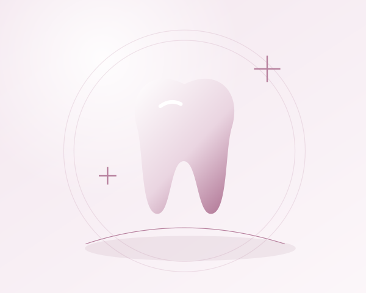

O primeiro sorriso também merece cuidado
Os dentes de leite fazem parte de uma etapa importante do crescimento. Eles participam da mastigação, da fala e da organização do espaço para os dentes permanentes. Embora sejam temporários, precisam de cuidado desde o início — com orientação, paciência e a participação dos responsáveis.

Dentes de leite têm uma função de verdade
Não é necessário esperar a dentição permanente para começar a cuidar. Dentes de leite saudáveis ajudam a criança a comer com conforto e contribuem para o desenvolvimento da fala. Eles também mantêm o espaço que será ocupado pelos dentes permanentes.
A cárie pode afetar crianças pequenas e avançar rapidamente. Por isso, sinais como dor, dificuldade para mastigar ou alterações nos dentes merecem orientação. A ideia de que um dente de leite não precisa de tratamento porque vai cair pode adiar um cuidado necessário.
A higiene começa com o primeiro dente
Segundo o Ministério da Saúde, a partir do nascimento do primeiro dente é indispensável usar uma escova pequena, de cerdas macias, e uma quantidade muito pequena de creme dental com flúor. A página sobre primeira infância orienta, nesse início, uma quantidade menor que um grão de arroz.
A quantidade precisa ser supervisionada. Evite que a criança engula a espuma e mantenha o creme dental fora do seu alcance. O acompanhamento odontológico ajuda a ajustar o uso conforme o crescimento e a esclarecer dúvidas sobre os produtos.
Um adulto participa, mesmo quando a criança quer fazer sozinha
A autonomia pode ser estimulada sem transferir toda a responsabilidade pela higiene. Pais e cuidadores devem realizar a escovação até que a criança consiga fazê-la adequadamente e continuar acompanhando a qualidade da limpeza. Na dentição de leite, o Ministério recomenda escovar pelo menos duas vezes ao dia.
Quando os dentes estão próximos, sem espaço entre eles, o fio dental também passa a fazer parte da rotina, uma vez ao dia. O adulto pode pedir uma demonstração para aprender a usá-lo com delicadeza.
Alimentação também é cuidado com os dentes
Evitar alimentos e bebidas adoçados ajuda a reduzir a exposição aos açúcares envolvidos no processo de cárie. O Ministério da Saúde orienta não acrescentar açúcar aos alimentos do bebê e chama atenção para doces, biscoitos, bebidas açucaradas e ultraprocessados.
A orientação alimentar precisa respeitar a fase de desenvolvimento da criança. Quando houver dúvidas, converse com a equipe de saúde que a acompanha. Higiene e alimentação se complementam; uma não compensa a ausência da outra.
Acompanhar o crescimento com acolhimento
O atendimento odontológico é uma oportunidade de orientar a família sobre higiene, alimentação e mudanças na dentição. Não precisa começar apenas quando há dor. Ao longo do crescimento, o profissional pode observar a saúde dos dentes e das gengivas e reconhecer necessidades individuais.
Transforme a higiene em um momento previsível e tranquilo, sem ameaças ou cobranças excessivas. Cuidar do primeiro sorriso é também ajudar a construir uma relação de confiança com o próprio corpo e com o cuidado em saúde.
Fontes consultadas
- Ministério da Saúde — Saúde bucal na primeira infância (abre em nova aba)
- Ministério da Saúde — Saúde bucal (abre em nova aba)
Conteúdo original de caráter educativo, elaborado com base nas orientações acima. Não substitui uma avaliação individual.